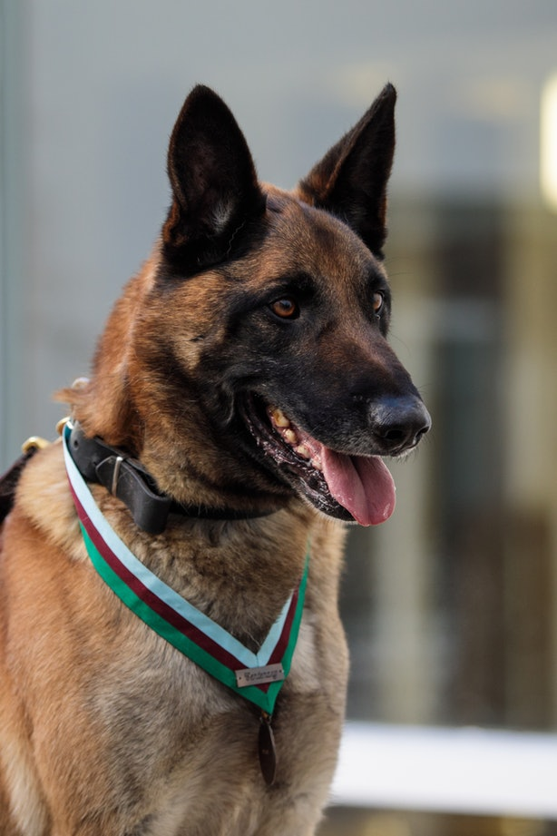

Home
This is my first webpage!
verybody loves puppies and kittens. They're cute, full of energy and they can't wait to explore the world around them. As rewarding as it is for ...
This is my first webpage!
verybody loves puppies and kittens. They're cute, full of energy and they can't wait to explore the world around them. As rewarding as it is for ...
Your beloved cat or dog is struck by a grave illness — or a car — and needs serious medical treatment.
And like human patients, pets can also need blood transfusions, so dog and cat blood donors are increasingly being sought to provide this life-saving service. What's more, demand for dog and cat blood is rising.
There are a couple of reasons for this, said Claire Sharp, an emergency and critical care veterinarian at Murdoch University in Perth. Pet owners have shifted the way they look at their furry friends. "I think 20 years ago, pet cats were outside-only, or only came inside occasionally," she said. "They were an aloof member of the family, not like a child or a true family member.
PUPPIES ARE BEST PETS A GIRL COULD EVER ASK FORPetting you is my number one therapy. It makes my day brighter and it soothes my weariness away. Thank you always being there, buddy. Best bday. Before you came into our lives, we have peaceful mornings, a better smelling backyard and untarnished furniture . In spite of giving us loads of headaches, the joy you have given us is unequal to anything Your cuddly ways of loving us is unlike any other. Thank you, buddy. Wonderful bday. Even if you can only bark, you do not need words to show how much you love me. Your puppy dog eyes, you furry tummy and icky kisses are enough to express how much I mean the world to you I want you to know that you mean as much to me as well, buddy. Best birthday. Now I understand why they say that dogs are a man’s best friend. You can sense it when something is bothering me and cuddle up beside me to comfort me. Thank you, buddy. I couldn’t imagine a world without you. Wonderful birthday. You are more than just a pet – you are my jogging buddy, my alarm clock, my best friend, my furniture destroyer, and my furry pillow. The moment you walked into my life, everything has changed . Although my apartment has been messier, I have never been more happier in my life. Thank you, buddy. Happy bday.
While your doggy cake is being baked at the oven, let me tell you how much I love you. Even though a lot of my savings goes to, you will always be my favourite companion and my irreplaceable best friend . Happy bday, buddy. During my lowest, I know that you are there to lift me up. During my loneliest, I know that you are there to cheer me up When I am lost, I know that you are there to guide me back. Thank you, buddy. Wonderful birthday.
You have kept the house safe from strangers even from that poor mailman you’ve chased around. You’ve done a job well done, buddy. Even a cat or squirrel is no match against your prowess. Happy birthday.
We’ve been to amazing places together. We’ve been through tough times together . We’ve shared the best moments of our lives together. I am hoping for more years of adventures with you, buddy. Best birthday.
I believe that dogs are sent by God as guardians to watch over us. I consider you as an angel and the truly the purest soul in my life. Happy birthday, buddy.
A few years ago, I was one of those people who look at dogs as just dogs. When you made you way into my life, you slowly changed it. You became my truest and most trusted companion . You taught me lessons that no one else could. You made me happy during my saddest times. Thank you, buddy. Wonderful bday.
The moment I hear your bark from the door, I can’t help but smile. For that reason, I always look forward to going home and rub that furry tummy of yours. Happy birthday, buddy.
105 Funny Birthday WishesThere is no empty-heart when paired with a bouncing and happy furry friend. Dogs are masters of showering unconditional love to anyone. Thank you for filling my empty heart overflowing with love, buddy. Happy birthday.
I never could imagine that a creature so cute and cuddly is capable of so much love. I never could imagine of loving you as much a parent loves his child. Best bday, buddy.